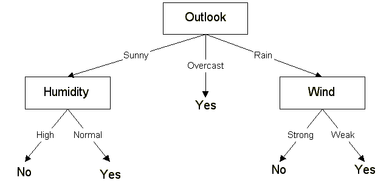

This paper details the ID3 classification algorithm. Very simply, ID3 builds a decision tree from a fixed set of examples. The resulting tree is used to classify future samples. The example has several attributes and belongs to a class (like yes or no). The leaf nodes of the decision tree contain the class name whereas a non-leaf node is a decision node. The decision node is an attribute test with each branch (to another decision tree) being a possible value of the attribute. ID3 uses information gain to help it decide which attribute goes into a decision node. The advantage of learning a decision tree is that a program, rather than a knowledge engineer, elicits knowledge from an expert.
J. Ross Quinlan originally developed ID3 at the University of Sydney. He first presented ID3 in 1975 in a book, Machine Learning, vol. 1, no. 1. ID3 is based off the Concept Learning System (CLS) algorithm. The basic CLS algorithm over a set of training instances C:
Step 1: If all instances in C are positive, then create YES node and halt.
If all instances in C are negative, create a NO node and halt.
Otherwise select a feature, F with values v1, ..., vn and create a decision node.
Step 2: Partition the training instances in C into subsets C1, C2, ..., Cn according to the values of V.
Step 3: apply the algorithm recursively to each of the sets Ci.
Note, the trainer (the expert) decides which feature to select.
ID3 improves on CLS by adding a feature selection heuristic. ID3 searches through the attributes of the training instances and extracts the attribute that best separates the given examples. If the attribute perfectly classifies the training sets then ID3 stops; otherwise it recursively operates on the n (where n = number of possible values of an attribute) partitioned subsets to get their "best" attribute. The algorithm uses a greedy search, that is, it picks the best attribute and never looks back to reconsider earlier choices.
ID3 is a nonincremental algorithm, meaning it derives its classes from a fixed set of training instances. An incremental algorithm revises the current concept definition, if necessary, with a new sample. The classes created by ID3 are inductive, that is, given a small set of training instances, the specific classes created by ID3 are expected to work for all future instances. The distribution of the unknowns must be the same as the test cases. Induction classes cannot be proven to work in every case since they may classify an infinite number of instances. Note that ID3 (or any inductive algorithm) may misclassify data.
The sample data used by ID3 has certain requirements, which are:
How does ID3 decide which attribute is the best? A statistical property, called information gain, is used. Gain measures how well a given attribute separates training examples into targeted classes. The one with the highest information (information being the most useful for classification) is selected. In order to define gain, we first borrow an idea from information theory called entropy. Entropy measures the amount of information in an attribute.
Given a collection S of c outcomes
where p(I) is the proportion of S belonging to class I. S is over c. Log2 is log base 2.
Note that S is not an attribute but the entire sample set.
If S is a collection of 14 examples with 9 YES and 5 NO examples then
Notice entropy is 0 if all members of S belong to the same class (the data is perfectly classified). The range of entropy is 0 ("perfectly classified") to 1 ("totally random").
Gain(S, A) is information gain of example set S on attribute A is defined as
Where:
S is each value v of all possible values of attribute A
Sv = subset of S for which attribute A has value v
|Sv| = number of elements in Sv
|S| = number of elements in S
Suppose S is a set of 14 examples in which one of the attributes is wind speed. The values of Wind can be Weak or Strong. The classification of these 14 examples are 9 YES and 5 NO. For attribute Wind, suppose there are 8 occurrences of Wind = Weak and 6 occurrences of Wind = Strong. For Wind = Weak, 6 of the examples are YES and 2 are NO. For Wind = Strong, 3 are YES and 3 are NO. Therefore
= 0.940 - (8/14)*0.811 - (6/14)*1.00
= 0.048
Entropy(Sweak) = - (6/8)*log2(6/8) - (2/8)*log2(2/8) = 0.811
Entropy(Sstrong) = - (3/6)*log2(3/6) - (3/6)*log2(3/6) = 1.00
For each attribute, the gain is calculated and the highest gain is used in the decision node.
Suppose we want ID3 to decide whether the weather is amenable to playing baseball. Over the course of 2 weeks, data is collected to help ID3 build a decision tree (see table 1).
The target classification is "should we play baseball?" which can be yes or no.
The weather attributes are outlook, temperature, humidity, and wind speed. They can have the following values:
outlook = { sunny, overcast, rain }
temperature = {hot, mild, cool }
humidity = { high, normal }
wind = {weak, strong }
Examples of set S are:
Day | Outlook | Temperature | Humidity | Wind | Play ball |
| D1 | Sunny | Hot | High | Weak | No |
| D2 | Sunny | Hot | High | Strong | No |
| D3 | Overcast | Hot | High | Weak | Yes |
| D4 | Rain | Mild | High | Weak | Yes |
| D5 | Rain | Cool | Normal | Weak | Yes |
| D6 | Rain | Cool | Normal | Strong | No |
| D7 | Overcast | Cool | Normal | Strong | Yes |
| D8 | Sunny | Mild | High | Weak | No |
| D9 | Sunny | Cool | Normal | Weak | Yes |
| D10 | Rain | Mild | Normal | Weak | Yes |
| D11 | Sunny | Mild | Normal | Strong | Yes |
| D12 | Overcast | Mild | High | Strong | Yes |
| D13 | Overcast | Hot | Normal | Weak | Yes |
| D14 | Rain | Mild | High | Strong | No |
We need to find which attribute will be the root node in our decision tree. The gain is calculated for all four attributes:
Gain(S, Outlook) = 0.246
Gain(S, Temperature) = 0.029
Gain(S, Humidity) = 0.151
Gain(S, Wind) = 0.048 (calculated in example 2)
Outlook attribute has the highest gain, therefore it is used as the decision attribute in the root node.
Since Outlook has three possible values, the root node has three branches (sunny, overcast, rain). The next question is "what attribute should be tested at the Sunny branch node?" Since we=92ve used Outlook at the root, we only decide on the remaining three attributes: Humidity, Temperature, or Wind.
Ssunny = {D1, D2, D8, D9, D11} = 5 examples from table 1 with outlook = sunny
Gain(Ssunny, Humidity) = 0.970
Gain(Ssunny, Temperature) = 0.570
Gain(Ssunny, Wind) = 0.019
Humidity has the highest gain; therefore, it is used as the decision node. This process goes on until all data is classified perfectly or we run out of attributes.

The final decision = tree
The decision tree can also be expressed in rule format:
IF outlook = sunny AND humidity = high THEN playball = no
IF outlook = rain AND humidity = high THEN playball = no
IF outlook = rain AND wind = strong THEN playball = yes
IF outlook = overcast THEN playball = yes
IF outlook = rain AND wind = weak THEN playball = yes
ID3 has been incorporated in a number of commercial rule-induction packages. Some specific applications include medical diagnosis, credit risk assessment of loan applications, equipment malfunctions by their cause, classification of soybean diseases, and web search classification.
The discussion and examples given show that ID3 is easy to use. Its primary use is replacing the expert who would normally build a classification tree by hand. As industry has shown, ID3 has been effective.
"Building Decision Trees with the ID3 Algorithm", by: Andrew Colin, Dr. Dobbs Journal, June 1996
"Incremental Induction of Decision Trees", by Paul E. Utgoff, Kluwer Academic Publishers, 1989
"Machine Learning", by Tom Mitchell, McGraw-Hill, 1997 pp. 52-81
"C4.5 Programs for Machine Learning", by J. Ross Quinlan, Morgan Kaufmann, 1993
"Algorithm Alley Column: C4.5", by Lynn Monson, Dr. Dobbs Journal, Jan 1997
v